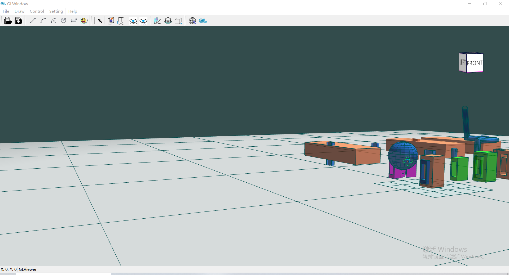
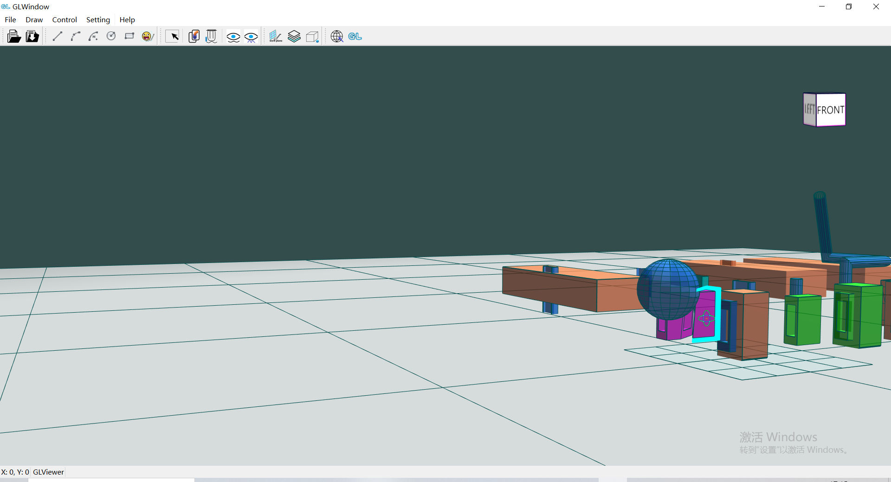
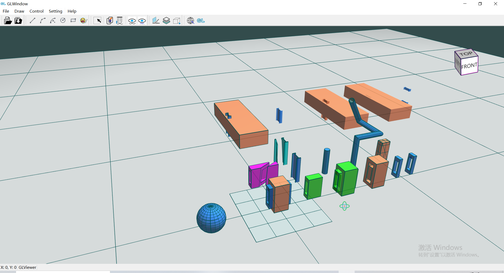
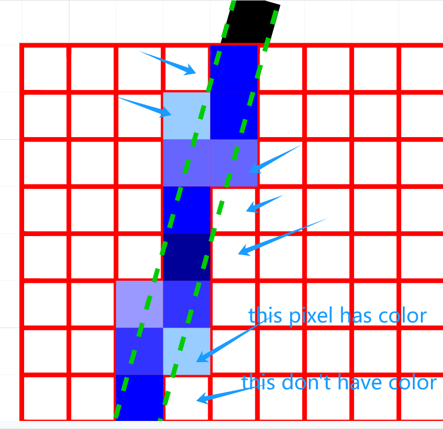
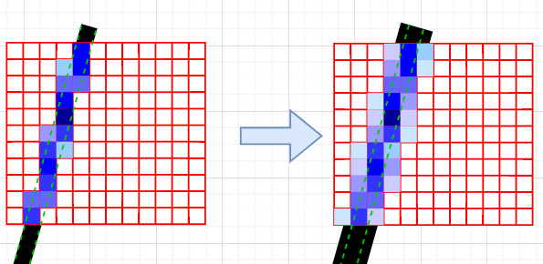
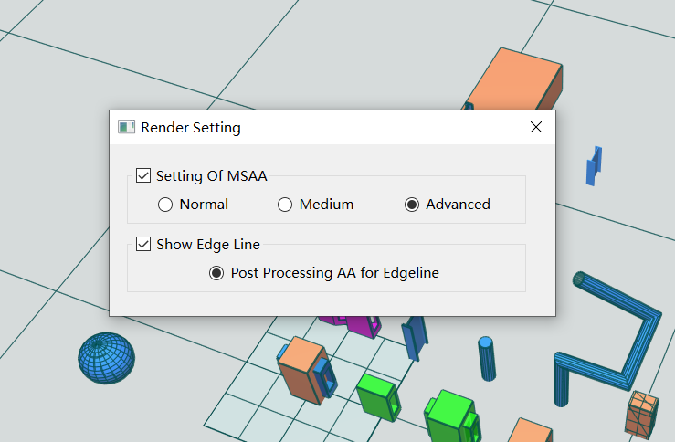

30.抗锯齿(anti aliasing)
大家仔细观察的话会发现我们渲染出来的模型边缘可能会有锯齿情况，在某些视角下锯齿情况很明显（如下图）。

这种锯齿情况的产生和光栅器中将图元形状转换为片段的方式有关，在视口变换过程中将坐标精确的图元形状变换为对应像素点的过程是一种“失真”的映射，因为屏幕像素是一个范围有限的二维的int数组。

这种锯齿情况被称之为走样(Aliasing)，有很多种抗锯齿（Anti-aliasing，也被称为反走样）的技术能够帮助我们缓解这种现象，从而产生更平滑的边缘。
抗锯齿技术包括超采样抗锯齿(Super Sample Anti-aliasing, SSAA)、多重采样抗锯齿(Multisample Anti-aliasing, MSAA)、FXAA (Fast Approximate AA)、TAA (Temporal AA)等，本文主要就SSAA和MSAA进行介绍，并采用MSAA进行抗锯齿应用。
30.1.超采样抗锯齿（SSAA）
超采样抗锯齿(Super Sample Anti-aliasing, SSAA)会以更高的分辨率（即超采样）来渲染场景，当图像输出到帧缓冲时会被下采样(Downsample)至正常的分辨率，这些额外的分辨率会被用来防止锯齿边缘的产生。SSAA抗锯齿效果较好，但由于其绘制了更多的片段，从而产生更多的性能开销。
通过借鉴SSAA背后的理念，MSAA(多重采样抗锯齿)以更加高效的方式实现了抗锯齿，其避免了片段着色器的更多次运行。
30.2.多重采样抗锯齿（MSAA）
多重采样不再使用像素中心的单一采样点，取而代之的是以特定图案排列的多个子采样点(Subsample)进行片段采样。

你可能有点理解了，每个片段（像素）对应多个子采样点，位于边缘的片段对应的所有子采样点并不一定都被图元形状所覆盖，也就是片段是有遮盖度的，遮盖度等因素可以对其颜色施加影响。
重要
进行多重采样时，当像素内有子采样点被覆盖时，无论像素内的子采样点数量为多少，都会执行一次片段着色器。这也是MSAA更加高效的关键所在。
30.2.1.原理和逻辑
多重采样时的光栅化规则比较复杂，需要结合图元形状的类型、像素内子采样点的遮盖度、片段顶点数据插值规则等因素处理。而像素的最终颜色还要与模板测试、深度测试以及恢复（Resolve）时的处理有关系。
我们先明确下几个概念：
Important
- 光栅化：指在
图元组装（Shape Assembly）之后到片段着色器之前所有经过的算法和过程； - 图元形状的类型：包括三角形、线、点。在光栅化阶段线被处理为一定宽度的矩形，点一般被处理为一个像素大小的矩形，便于采样；
- 像素采样遮盖度：在光栅化阶段中对像素内的多个子采样点进行采样后计算，指被图元形状覆盖的子采样点与子采样点数量的比值；
- 恢复（
Resolve）阶段：MSAA帧缓冲需要经过一些加权处理（重采样）才能转换为普通的帧缓冲，这个过程称为Resolve。在将MSAA帧缓冲渲染到屏幕之前需要进行此过程； - 片段顶点数据插值规则：一般在片段着色器中会根据对应顶点数据（包括坐标、法线等属性）、光照等因素决定片段的颜色，而顶点数据是插值得到的（想象一下：一个三角形有3个点，但其可能覆盖n个像素，也就是用n个像素显示这个三角形；每个像素的顶点数据是插值的来的）；
- 当像素中心被图元形状覆盖时，顶点数据
插值（interpolated）到像素中心； - 当像素中心未被图元覆盖时，顶点数据
外插（extrapolated）到像素中心。
- 当像素中心被图元形状覆盖时，顶点数据

下图中两个三角形在多重采样时生成了几个片段？子采样点遮盖度、片段顶点数据插值规则分别时怎样的？这些片段的最终颜色是怎样的？

现在我们将逻辑穿起来，来看一下多重采样下片段及其颜色的产生。
Important
- （光栅化阶段采样时）当像素内有子采样点被图元形状覆盖时，该像素及对应数据（顶点数据插值得到）会执行片段着色器，输出的颜色将被记录在被覆盖的子采样点中；
- 在模板测试和深度测试后可能会有部分子采样点被丢弃，颜色信息只存储于被覆盖的且通过测试的子采样点中；
- 在恢复（Resolve）阶段对子采样点及其颜色数据进行加权处理得到像素的颜色，被保留的子采样点及颜色能够对结果产生重要影响，否则只能作为分母的一份子参与处理。

30.2.2.理论效果
一个像素中如果有更多的采样点被三角形遮盖，那么这个像素的颜色就会更接近于三角形的颜色。如果我们给最开始的三角形填充颜色，就能得到以下的效果：

30.3.开启和使用MSAA
在OpenGL中内建了MSAA技术，当然要开启并应用它还需要做一点工作。
由于我们此前绘制鼠标旋转标识时使用了glReadPixels接口根据像素位置读取深度进而计算鼠标旋转中心位置，而MSAA的帧缓冲不支持从中读取深度值，所以我们要多做一点工作来适配深度值的读取。
MSAA适配深度值读取
目前有两种方案可以适配深度值的读取：
- 正常开启
MSAA，然后在每个渲染循环中增加后处理：将当前帧缓冲还原（resolve）到一个中间的帧缓冲中，之后每次从这个中间的帧缓冲中读取深度值； - 采用离屏渲染技术，创建
MSAA帧缓冲并在绘制时绘制到MSAA帧缓冲中，然后再还原（resolve）到屏幕对应的默认帧缓冲中，这样渲染到屏幕以及读取深度值都是在默认帧缓冲中读取的，而MSAA帧缓冲起到了中转的功能。
当前GLViewer采用了第二种方案，

类似于选择帧缓冲，我们创建了MSAAFramebuffer类，其工作方式和选择帧缓冲类似，
- 在每次窗体尺寸变化时释放当前
MSAAFramebuffer并根据新的窗口尺寸创建新的MSAAFramebuffer； - 在
GLView.paintGL中首先调用MSAAFramebuffer.EnableWriting绑定到MSAAFramebuffer，作为渲染目标帧缓冲，之后进行正常的绘制； - 在渲染完成后，调用
MSAAFramebuffer.BlitFrameBuffer将MSAAFramebuffer还原到默认帧缓冲（注意使用defaultFramebufferObject来获取）中； - 之后默认帧缓冲中的数据会绘制到屏幕上，而鼠标事件触发的
glReadPixels同样会从默认帧缓冲中读取数据。
在创建MSAA帧缓冲时，可以使用多重采样纹理附件或多重采样渲染缓冲对象作为帧缓冲的附件，在GLViewer中使用这两种分别作为颜色缓冲和模板深度缓冲的附件。在此过程中我们可以通过参数指定每个像素子采样点的格式，当前我们设置的值是4。
//other code
glTexImage2DMultisample(GL_TEXTURE_2D_MULTISAMPLE, ViewerSetting::sampleSieOfMSAA, GL_RGB, mWidth, mHeight, GL_TRUE);
//other code
glRenderbufferStorageMultisample(GL_RENDERBUFFER, ViewerSetting::sampleSieOfMSAA, GL_DEPTH24_STENCIL8, mWidth, mHeight);
//other code
补充
- 有了之前的选择帧缓冲的使用经验，本节课程的内容理解和应用会容易的多；
OpenGL允许我们自定义自己的帧缓冲，来实现一些灵活多样的功能，我们现在自定义了两种帧缓冲啦。
30.4.MSAA效果
当设置的每个像素的子采样点数量是4时，我们切换到本文开头齿距情况图的类似视角，效果如下，
4时" width="900" align="middle" style="display: block; margin-left: auto; margin-right: auto;"/>
当每个像素的子采样点数量是8时，效果如下，
8时（视角一）" width="900" align="middle" style="display: block; margin-left: auto; margin-right: auto;"/>
8时（视角二）" width="900" align="middle" style="display: block; margin-left: auto; margin-right: auto;"/>
Attention
- 开启
MSAA后在大部分视角下锯齿效果都有较好的改善。如果仔细观看的话，组件的边线看起来“变粗”了，实际是其变的“边缘模糊”了。 - 增大子采样点数量意味着更多的性能消耗。
详细视频效果：讲解MSAA抗锯齿的效果、不足和弥补(PPAA)：OpenGL+QT开发三维引擎
30.5.MSAA的特点和不足
MSAA方式通过增加像素的子采样点方式来提高像素的采样精度，进而对应片段数据（顶点、颜色、深度、模板值等信息）会更逼近于实际图元。
当子采样点数量增大到一定数值后再进行增大，会出现没有视觉效果提升的感官情况，因为“目标像素”是局限在有子采样点被覆盖的像素，遮盖度精确到一定数值后再精确不会带来视觉效果的“变化”。对于距离实际图元非常近的像素，由于其与图元没有重叠或重叠范围很小，导致其始终不能被采样，这在数学上是合理的：没有重叠，就不采样！但在应用上是合理的吗？它旁边的像素只有部分重叠，为什么被采样了？而且颜色覆盖整个像素区域！这依然没有逼近线性的效果！

一种处理办法是结合边线数据的后处理进行边缘的模糊，即迭代逼近于视觉上的线性效果。
- 开启模板值写入，正常绘制边线，设置所有片段都通过模板测试且在深度测试通过后写入固定模板值，比如
2； - 以较大的边线宽度（如
1.2倍），和相对较浅的颜色重新绘制边线，这次只让模板值不为2的片段通过模板测试，进而在通过之后的深度测试等处理后输出颜色；这种方式（1）不会影响此前的输出效果（2）会考虑“距离”因素，将符合近距离条件的像素赋予较浅的颜色值；进一步的模糊了边缘，也就是逼近了视觉上的线性效果。 - 恢复OpenGL的一些上下文状态。
通过增加一次迭代的方式逼近视觉上线性效果，应用了数学上迭代逼近的理念。

Attention
- 注意上图为了示意效果将迭代的线宽设置为了原来的
2倍，实际处理时设置一个更合适的倍数（如1.2倍）可以避免影响本来“线宽”的同时，达到逼近线性效果（模糊边缘）的目的； - 需要进行效果的调整和测试来达到更好的抗锯齿效果，包括测试迭代时的线宽数据、颜色数据等。
可以结合代码、视频课程进行熟悉和学习。
- 课程文档教程
- 课程详细代码
- 课程视频讲解：哔哩哔哩bilibili、CSDN课堂
补充
在GLViewer中我们实现了此种优化方式，并提供了设置面板进行控制，读者可自行体验不同设置下的效果差异。

30.6.自定义抗锯齿算法
我们可以自定义抗锯齿算法，如采用类似于图像处理的技术对渲染的图片进行效果处理，即Post Processing AA，然后再渲染出来。
本文不对自定义抗锯齿算法进行深入探究，相信在了解了锯齿产生的原因以及MSAA背后的原理后能够有助于更深入的研究。